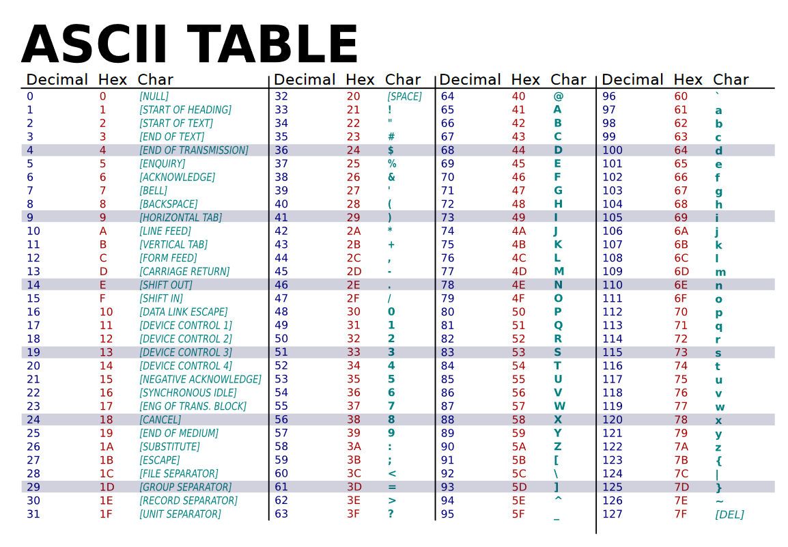
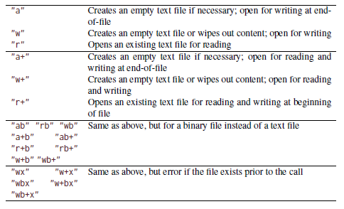
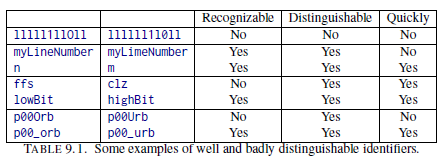

C library functions provide basic tools in an efficient way, or provide an abstraction layer from the specific properties and needs of the platform.
C programmers should be able to implement basic functions like the ones in C library
Exs 51
Write a function my_strtod that implements the functionality of strtod for decimal floating-point constants.
A basic use of strtod:
#include <stdlib.h>#include <stdio.h>int main(){constchar*str ="12.345 is my number";char*endptr;float number; number = strtod(str,&endptr); printf("Full string: %s\n", str); printf("Number: %.3f\n", number); printf("Remaining string: %s\n", endptr);return0;}
Full string: 12.345 is my number
Number: 12.345
Remaining string: is my number
my_strtod

my_strtod
#include <stdio.h>#include <stdlib.h>#include <ctype.h>#include <math.h>float my_strtod(constchar*str,char**ptr){int sign =1;// 1- Remove spaces.while(isspace(*str)){ str++;}// 2- Check for negative sign that we want to keepif(*str =='-'){ sign =-1; str++;}// 3- Search for integer partfloat result =0;while(isdigit(*str)){ result =(result *10)+(float)(*str -'0'); str++;}// 4- Search for fractional partfloat fraction =0.1f;// Initialize fraction valueif(*str =='.'||*str ==',')//Check for commas or dots{ str++;// Skip commawhile(isdigit(*str)){ result = result +(*str -'0')* fraction; fraction = fraction *0.1f;// Update the fraction value by dividing it by 10 str++;}}else{// Even if it's not a point / comma, we still need to skip the position str++;}// 5- Search for exponent if anyif(*str =='e'||*str =='E'){ str++;// Skip 'e' or 'E'int exponentSign =1;// We initialize the exponent sign to positiveif(*str =='-'){ exponentSign =-1; str++;// Skip negative sign}elseif(*str =='+'){ str++;// Skip positive sign}int exponent =0;while(isdigit(*str)){ exponent =(exponent *10)+(*str -'0'); str++;} result *= powf(10, exponentSign * exponent);}// 6 - Update pointer to the remaining text*ptr =(char*)str;// 7- Return the resultreturn result * sign;}int main(){constchar*str ="5,45 is my number";char*endptr;float number; number = my_strtod(str,&endptr); printf("Full string: %s\n", str); printf("Number: %.3f\n", number); printf("Remaining string: %s\n", endptr);return0;}
Full string: 5,45 is my number
Number: 5.450
Remaining string: is my number
Header files
Bundle mostly functions.
C library functions usually indicate failure through a special return value (0, special error codes, special success codes, etc).
Many of the functions in the C library are vulnerable to buffer overflow.
There are bounds-checking functions that usually use the suffix _s on the name of the library function they replace, such as printf_s for printf. Identifier names terminating with _s are reserved
Input, output, and file manipulation

Modes and modifiers for fopen and freopen. One of the first three must start the mode string, optionally followed by one or more of the other three.
Notes on text input and output
Text input and output converts data.Internal and external representations of text characters are not necessarily the same
White space that precedes the end of line may be suppressed.
The presence of trailing white space such as blank or tabulator characters cannot be relied upon and should be avoided:Text lines should not contain trailing white space.
Formats to print values
Interpreting a value with the wrong modifier can cause severe damage.
printf_s, fprintf_s don’t check whether the expressions in the list correspond to correct format specifiers
Listing 8.3
#include <stdlib.h>#include <stdio.h>#include <errno.h>enum{ buf_max =32,};//int main (int argc ,char* argv [ argc +1]){int ret = EXIT_FAILURE ;char buffer [ buf_max ]={0};for(int i =1; i < argc ;++i){FILE* instream = fopen ( argv [i],"r");if( instream ){while( fgets ( buffer , buf_max , instream )){ fputs ( buffer , stdout );} fclose ( instream ); ret = EXIT_SUCCESS ;}else{ fprintf ( stderr ," Could not open %s: ", argv [i]); perror (0); errno =0;}}return ret ;}
Listing 8.3 (with comments)
#include <stdlib.h>#include <stdio.h>#include <errno.h>// This program reads files and prints it to stdout.enum{ buf_max =32,};//int main (int argc ,char* argv [ argc +1]){int ret = EXIT_FAILURE ;// same as ret = 1 char buffer [ buf_max ]={0};// Declares 32 chars array initialized to 0for(int i =1; i < argc ;++i){// Goes over all the arguments, each one is a file pathFILE* instream = fopen ( argv [i],"r");// We assume argv containts paths of filesif( instream ){// Check that the pointer is different from NULLwhile( fgets ( buffer , buf_max , instream )){// Name of the array is a poiner to its first element fputs ( buffer , stdout );// Prints each line until reaching EOF} fclose ( instream ); ret = EXIT_SUCCESS ;// If we reach this point, the file was succesfully read. }else{/* Provides some error diagnostic . */ fprintf ( stderr ," Could not open %s: ", argv [i]); perror (0);// Prints corresponding error code errno =0;// Resets the error code}}return ret ;// Returns the last value of ret }
[Exs 54]
Under what circumstances will this program finish with success or failure return codes?
Success: The program reads at least one of the files in the file paths
Failure: The program fails to reach EXIT_SUCCESS (this is, to read one file) at least once
[Exs 55]
Surprisingly, this program even works for files with lines that have more than 31 characters. Why?
From fgetsdocumentation, The function has 3 arguments:
str − Pointer to an array of chars where the string read is stored.
n − Maximum number of characters to be read (including the final null-character). Usually, the length of the array passed as str is used.
stream − Pointer to a FILE object that identifies the stream where characters are read from.
The while function checks the returned value by fgets, whose output, the string variable (buffer), is then written to the standard output stream. That’s why for each file/path, fgets prints 31 characters (+ null character \0) each time until reaching EOF.
I celebrate myself, and sing myself,
And what I assume you shall assume,
For every atom belonging to me as good belongs to you.
I loafe and invite my soul,
I lean and loafe at my ease observing a spear of summer grass.
[Exs 57]
Have the program precede all output lines with line numbers if the first command-line argument is “-n”.
Some ideas:
Easy and lazy: set the buffer size to a ridiculously large value and print the line number in each while
More difficult to code and time consuming but robust? Go over the buffered text using the buffer pointer searching for an end of line.
More difficult to code and more time consuming but robust? Calculate size of line vs size of buffer to conclude line number
String processing
The C library provides functions and macros that deal with the most commonly used classes through the header ctype.h.
It has the classifiers isblank, isdigit, islower, ispunct, isspace, isupper, conversions toupper and tolower, etc
hexatridecimal function
Provides a base 36 numerical value for all alphanumerical characters.
/* Supposes that lowercase characters are contiguous . */_Static_assert('z'-'a'==25,"alphabetic characters not contiguous");# include <ctype.h>/* Converts an alphanumeric digit to an unsigned *//* '0' ... '9' => 0 .. 9u *//* 'A' ... 'Z' => 10 .. 35u *//* 'a' ... 'z' => 10 .. 35u *//* Other values => Greater */unsigned hexatridecimal (int a){if( isdigit (a)){/* This is guaranteed to work : decimal digits are consecutive , and isdigit is not locale dependent . */return a -'0';// 0 represents 48 in ASCII. This returns the numeric value of the character}else{/* Leaves a unchanged if it is not lowercase */ a = toupper (a);/* Returns value >= 36 if not Latin uppercase */return( isupper (a))?10+(a -'A'):-1;}}int main(){/* code */int result = hexatridecimal('z'); printf("%d\n", result);return0;}
unsigned hexatridecimal (int a){if( isdigit (a)){return a -'0';// 0 represents 48 in ASCII. This returns the numeric value of the character}else{ a = toupper (a);return( isupper (a))?10+(a -'A'):-1;}}
Assumptions
[Exs 59]The second return of hexatridecimal makes an assumption about the relation between a and ‘A’. What is it?
It assumes that all uppercase characters are contiguous starting with ‘A’ (ex: if A = 0, B = 1, C = 2, and so on)
Assumptions
[Exs 60]Describe an error scenario in which this assumption is not fulfilled.
Decimal
Char
65
A
…
…
100 (instead of 90)
Z
In which case the function would return a value higher than 35 (10 + (100 - 65) = 45)
Assumptions
[Exs 61]Fix this bug: that is, rewrite this code such that it makes no assumption about the relation between a and ‘A’
Map each value between 65 and 90 to each uppercase ordered letter
Time
See time.h
Time acquisition
Time conversion
Output of time data
See strftime format specifiers. Some may differ dynamically according to locale runtime settings (ch 8.6).
Challenge 10
Can you compare the time efficiency of your sorting programs (challenge 1)?
#include <time.h>int main() { int my_array[100000];srand(123); int i;for (i =0; i <100000; i++) { my_array[i] =rand(); } int arr_size =sizeof(my_array)/sizeof(my_array[0]); clock_t start =clock();mergeSort(my_array, 0, arr_size -1); clock_t end =clock();printf("Time taken: %f\n", (double)(end - start) / CLOCKS_PER_SEC); return 0; }
Level 2: COGNITION
Chapter 9: Style
All C code must be readable
Consider code volumen: short-term memory and the field of vision are small.
Coding style is not a question of taste but of culture. When you enter an established project, you enter a new cultural space.
Have a formatting policy
Have your text editor automatically format your code correctly
Choose a consistent naming policy for all identifiers
Chapter 9: Style
Names must be recognizable and quickly distinguishable.

Element
Identifies
Example
Type name
Concept
time for struct timespec, person for a structure collecting people data
Global constant
Artifact
M_PI
Global variable
State
toto_initialized to encode that library toto has already been initialized
Function / functional macro
Action
matrixMult
Chapter 10: Organization and documentation
What to document and where?
what Function interfaces describe what is done.
what for Interface comments document the purpose of a function.
how Function code tells how the function is organized.
in which manner Code comments explain the manner in which function details are implemented
Global variables
Since function parameters are passed by value, the only possibility that we have for two functions to manipulate the same object is to declare an object such that the declaration is visible to both functions.
Global variables make code inflexible (the object to operate on is fixed), are difficult to predict (the places of modification are scattered all over), and to maintain
Pure functions
The only interest in the execution of a pure function is its result
The function has no effects other than returning a value.
The function return value only depends on its parameters.
Express small tasks as pure functions whenever possible.
Be careful with macros!
There are many pitfalls
[Exs 3]Consider a macro sum(a, b) that is implemented as a+b. What is the result of sum(5, 2)*7?
# include <stdlib.h># include <stdio.h>#define sum(a, b) a+bint main (int argc , char* argv[argc +1]) {printf("Output of sum macro: %d", sum(5,2) *7 ); //5+2*7 return 0;}
Output of sum macro: 19
Expressions will bind to operators in an unexpected way when put into a nontrivial context
[Exs 4]
Let max(a, b) be implemented as ((a) < (b) ? (b) : (a)). What happens for max(i++, 5)?
# include <stdlib.h># include <stdio.h>#define max(a,b) ((a) < (b) ? (b) : (a))int main (int argc , char* argv[argc +1]) { int i =6;printf("Output of max macro: %d", max(i++,5) ); return 0;}
Output of max macro: 7
Macros are textual replacements. If a macro parameter is used twice (or more), its effects are done twice.